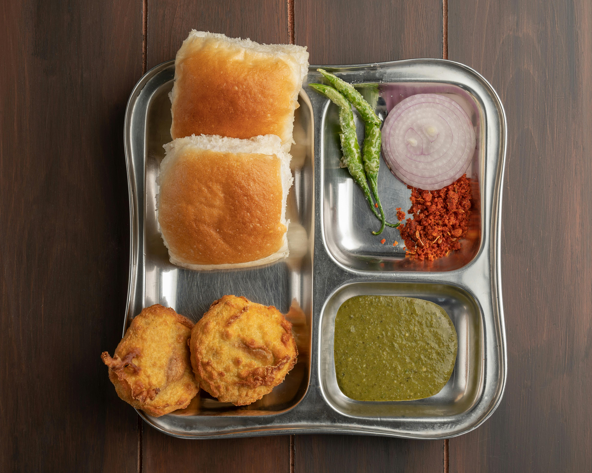

Home
Pav Bhaji Recipe

Description
Pav Bhaji is a popular Mumbai street food prepared with a spiced, buttery, mashed vegetable curry called bhaji.
The bhaji is prepared with potatoes, cauliflower, green peas, and other vegetables and is served with soft pav buns
toasted in butter. It is usually accompanied by chopped onions, lemon wedges, and fresh coriander. Pav Bhaji is a
filling and satisfying meal enjoyed across India.
Ingredients
- Mixed Vegetables
- Green Peas
- Pav Bhaji Masala
- Butter
- Pav(Buns)
Steps
- Pressure Cook the Vegetables In a pressure cooker, add cauliflower, winter carrots, beetroot, 2 tbsp salt, and enough water to cover the vegetables. Pressure cook for 3-4 whistles until the vegetables are soft.
- Sauté the Onions Heat a thick-bottomed pan and add butter. Once the butter melts, add chopped onions and sauté until translucent.
- Add Spices and Tomatoes Add jeera (cumin) and continue to sauté until aromatic. Then, add chopped tomatoes and cook until they turn soft and mushy.
- Add Vegetables and Masala Add green peas to the pan and sauté for a few minutes. Mash the boiled potatoes and add them to the pan along with salt, jeera powder, Kashmiri chilli powder, coriander powder, and ghati masala. Mix well and add a little water to adjust the consistency.
- Mash the Vegetables Mash all the vegetables using a potato masher until they are well combined. Add pav bhaji masala and red chilli & garlic paste. Cook for an additional 3-4 minutes.
- Combine and Cook Once the pressure-cooked vegetables are ready, add them to the pan and mash them thoroughly into the mixture. In a separate thick flat pan, heat oil and water. Add the prepared pav bhaji mixture, butter, and chopped coriander. Cook for a minute, stirring continuously.
- Toast the Ladi Pav Toast the ladi pav on another pan until they are lightly crisp and golden brown.
- Serve the hot pav bhaji with toasted ladi pav, some chopped onions, and a lemon wedge on the side.